2. Pfadregel
Mit einem KI-Tutor lernen
Ein KI-Tutor erklärt dir diese Seite und hilft dir bei den Übungen. Wähl deinen Assistenten:
Mit Claude öffnen Mit ChatGPT öffnen Mit Mistral Vibe öffnen
Du nutzt dein eigenes Konto beim Anbieter. Der Assistent ist kein Angebot von lernapps.net: lernapps liefert nur Inhalte und Übungen. Die Wahl gilt für alle Seiten, nur auf diesem Gerät.
Warum?
Viele Fragen passen nicht zu einem einzigen Pfad: „genau einmal rot“ kann rot-blau oder blau-rot sein. Die zweite Pfadregel sagt, wie du solche Pfade zusammenrechnest. Und darauf kommt es an: das Ereignis in Worten richtig in Pfade zu übersetzen.
Regel
- 2. Pfadregel
Gehören mehrere Pfade zu einem Ereignis, dann addierst du ihre Pfadwahrscheinlichkeiten (Summenregel).
Merkhilfe: entlang des Pfades mal, über mehrere Pfade plus.
Beispiel
Genau einmal rot
Urne mit 3 roten, 2 blauen und 1 gelben Kugel, zweimal ziehen ohne Zurücklegen. Wie groß ist ?
- Pfade finden: rot-blau, rot-gelb, blau-rot, gelb-rot. (rot-rot ist zweimal rot, gehört nicht dazu.)
- Jeden Pfad multiplizieren: , , , .
- Addieren: .
Kürzer: „genau einmal rot“ = rot-nicht rot + nicht rot-rot: .
Bild

Der Baum aus dem Beispiel: 3 rote (R), 2 blaue (B) und 1 gelbe (G) Kugel, zweimal ohne Zurücklegen. Erste Stufe: rot 3/6, blau 2/6, gelb 1/6. Nach rot: rot 2/5, blau 2/5, gelb 1/5; nach blau: rot 3/5, blau 1/5, gelb 1/5; nach gelb: rot 3/5, blau 2/5 (gelb ist leer). Orange sind die vier Pfade von „genau einmal rot“: rot-blau 1/5, rot-gelb 1/10, blau-rot 1/5, gelb-rot 1/10. Zusammen 3/5.
Quelle: Eigene Darstellung der Mathe-Karte. Lizenz: MIT.Video dazu
Beim Abspielen gehen Daten an YouTube/Google, darunter deine IP-Adresse.
- Noch eine Erklärung: Pfadregeln bei serlo.org
Übung
Aufgabe Nr. 1
Aufgabe Nr. 1
Du wirfst eine Münze zweimal. Ereignis E: „mindestens einmal Zahl“. Klick im Baum die Pfade an, die zu E gehören, und berechne dann P(E).
Das Bild zeigt den Baum; du kannst die Enden der Pfade anklicken.
P(E) = …
Lösung
Passende Pfade (3): Kopf-Zahl, Zahl-Kopf, Zahl-Zahl
Jeder Pfad als Produkt: 1/2 · 1/2 = 1/4; 1/2 · 1/2 = 1/4; 1/2 · 1/2 = 1/4
- Pfadregel: P(E) = 1/2 · 1/2 + 1/2 · 1/2 + 1/2 · 1/2 = 3/4
Aufgabe Nr. 1
Aufgabe Nr. 1
Du wirfst eine Münze zweimal. Ereignis E: „genau einmal Kopf“. Welcher Term berechnet P(E)?
Das Bild zeigt den Baum der Aufgabe mit allen Zweigen.
- A) 1/2 · 1/2
- B) 1/2 + 1/2 + 1/2 + 1/2
- C) 1/2 · 1/2 + 1/2 · 1/2
Lösung
Richtig ist C).
Passende Pfade: Kopf-Zahl, Zahl-Kopf
P(E) = 1/2 · 1/2 + 1/2 · 1/2 = 1/2
Übung
Drei Beispielaufgaben, jede mit ihrer Lösung:
Aufgabe Nr. 1
In einer Urne liegen 1 rote und 3 blaue Kugeln. Du ziehst zweimal mit Zurücklegen. Wie groß ist die Wahrscheinlichkeit, genau einmal Rot zu ziehen? Gib sie als Dezimalzahl an, auf zwei Nachkommastellen gerundet.
Tipp
Welche zwei Pfade gehören zu „genau einmal rot“? Rechne jeden mit der 1. Pfadregel und addiere.
Lösung
- Pfade: rot-blau und blau-rot. Beide haben dieselbe Wahrscheinlichkeit .
Richtige Antwort: 0,38
Aufgabe Nr. 2
In einer Urne liegen 6 rote und 4 blaue Kugeln. Du ziehst zweimal mit Zurücklegen. Wie groß ist die Wahrscheinlichkeit, genau einmal Rot zu ziehen? Gib sie als Dezimalzahl an, auf zwei Nachkommastellen gerundet.
Tipp
Welche zwei Pfade gehören zu „genau einmal rot“? Rechne jeden mit der 1. Pfadregel und addiere.
Lösung
- Pfade: rot-blau und blau-rot. Beide haben dieselbe Wahrscheinlichkeit .
Richtige Antwort: 0,48
Aufgabe Nr. 3
In einer Urne liegen 6 rote und 3 blaue Kugeln. Du ziehst zweimal mit Zurücklegen. Wie groß ist die Wahrscheinlichkeit, genau einmal Rot zu ziehen? Gib sie als Dezimalzahl an, auf zwei Nachkommastellen gerundet.
Tipp
Welche zwei Pfade gehören zu „genau einmal rot“? Rechne jeden mit der 1. Pfadregel und addiere.
Lösung
- Pfade: rot-blau und blau-rot. Beide haben dieselbe Wahrscheinlichkeit .
Richtige Antwort: 0,44